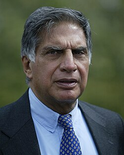

 Ratan Naval Tata[a] (28 December 1937 – 9 October 2024) was an Indian industrialist and philanthropist. He served as the chairman of Tata Group and Tata Sons from 1991 to 2012 and he held the position of interim chairman from October 2016 to February 2017.[3][4] In 2000, he received the Padma Bhushan, the third highest civilian honour in India, followed by the Padma Vibhushan, the country's second highest civilian honour, in 2008.Ratan Tata was the son of Naval Tata, who was adopted by Ratanji Tata, son of Jamshedji Tata, the founder of the Tata Group. He graduated from Cornell University College of Architecture with a bachelor's degree in architecture.[6] He had also attended the Harvard Business School (HBS) Advanced Management Program in 1975.[1] He joined the Tata Group in 1962,[7] starting on the shop floor of Tata Steel. He later succeeded J. R. D. Tata as chairman of Tata Sons upon the latter's retirement in 1991. During his tenure, the Tata Group acquired Tetley, Jaguar Land Rover, and Corus, in an attempt to turn Tata from a largely India-centric group into a global business. Ratan Tata was born in Bombay (now Mumbai), during the British Raj, into a Parsi Zoroastrian family, on 28 December 1937.[11] He was the son of Naval Tata (who was born in Surat and later adopted into the Tata family), and Soonoo Tata (the niece of Tata group founder Jamsetji Tata).